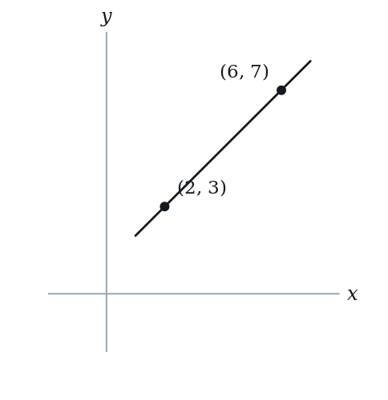
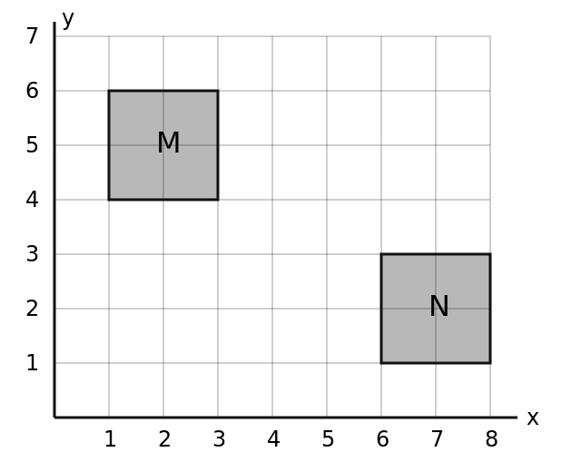
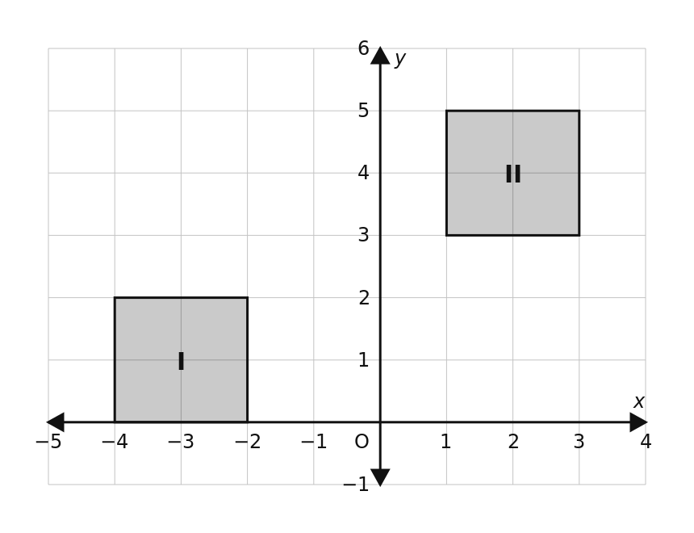

Slope & Intercepts — Practice Set
Bank code: COG-SLO · Section: Coordinate Geometry · 30 questions — Easy 7 · Medium 15 · Hard 7 · Extreme 1
Rise over run with y on top; a horizontal line has slope 0 and a vertical line has none; rearrange to y = mx + b before reading anything off.
Every question below is live in the question bank under the ID shown — the sheet and the portal are the same questions. Attempt a level with the clock running, then check Part C.
Part A — Questions
Quantitative Comparison — the four choices are always the same, so they are not reprinted: (A) Quantity A is greater · (B) Quantity B is greater · (C) The two quantities are equal · (D) The relationship cannot be determined from the information given
Level 1 · Easy — 7 questions · ~5 min
warm-up — these must be automatic
Q1 · COG-SLO-001 · MCQ · 45s
A line in the xy-plane passes through the points (2, 3) and (6, 7). What is the slope of the line?

(A) -1
(B) 1/2
(C) 1
(D) 2
(E) 4
Q2 · COG-SLO-003 · MCQ · 40s
A horizontal line passes through the point (4, -2). What is its slope?
(A) -2
(B) 0
(C) 1/2
(D) 4
(E) Undefined
Q3 · COG-SLO-004 · MCQ · 40s
A vertical line passes through the point (3, 7). What is its slope?
(A) 0
(B) 3/7
(C) 7/3
(D) 3
(E) Undefined
Q4 · COG-SLO-007 · Numeric Entry · 45s
What is the y-intercept of the line 2x + y = 8?
Numeric entry — write the number.
Q5 · COG-SLO-011 · QC · 45s
Line A has equation y = 3x + 7. Line B has equation y = 3x - 2.
Quantity A: The slope of Line A Quantity B: The slope of Line B
Q6 · COG-SLO-012 · MCQ · 45s
The line y = mx + b passes through the origin. Which of the following must be true?
(A) m = 0
(B) b = 0
(C) m = b
(D) m = 1
(E) b = 1
Q7 · COG-SLO-013 · Numeric Entry · 55s
What is the x-intercept of the line 3x + 6 = y + 6?
Numeric entry — write the number.
Level 2 · Medium — 15 questions · ~20 min
two or three steps, one planted trap each
Q8 · COG-SLO-014 · MCQ · 60s
What is the slope of the line with equation 4x - 2y = 10?
(A) -5
(B) -2
(C) 2
(D) 4
(E) 5
Q9 · COG-SLO-016 · Numeric Entry · 75s
The line through points (k, 3) and (2, 7) has slope 2. What is the value of k?
Numeric entry — write the number.
Q10 · COG-SLO-018 · MCQ · 65s
Which line is steeper?
(A) y = 2x + 5
(B) y = -3x + 1
(C) y = (1/2)x - 4
(D) y = x + 10
(E) All have the same steepness
Q11 · COG-SLO-019 · Numeric Entry · 70s
A line has x-intercept 5 and y-intercept -3. What is the slope of the line?
Numeric entry — write the number.
Q12 · COG-SLO-020 · Select all that apply · 85s
Which of the following lines have a negative slope? Select all that apply.
(A) y = -2x + 5
(B) 3x - y = 7
(C) y = 4 - x
(D) x + 2y = 8
(E) y = 3
Q13 · COG-SLO-022 · QC · 75s
Line P passes through (0, 6) and (3, 0). Line Q has equation y = -2x + 5.
Quantity A: The slope of Line P Quantity B: The slope of Line Q
Q14 · COG-SLO-026 · QC · 75s
Line M: 2x - 3y = 12. Line N: slope = 2/3.
Quantity A: The slope of Line M Quantity B: The slope of Line N
Q15 · COG-SLO-027 · MCQ · 70s
A car travels at a constant speed. At time t = 0, it is at mile marker 20. At t = 3 hours, it is at mile marker 110. What is the rate of change (slope) of distance with respect to time?
(A) 20 mph
(B) 30 mph
(C) 30 miles
(D) 90 mph
(E) 110 mph
Q16 · COG-SLO-041 · MCQ · 90s
The line y = mx + b is reflected over the y-axis. What is the slope of the reflected line?
(A) m
(B) -m
(C) 1/m
(D) -1/m
(E) b
Q17 · COG-SLO-043 · MCQ · 85s
In the xy-plane, line L passes through the points (t, 2t) and (3t, 8t), where t ≠ 0. What is the slope of line L?
(A) 2
(B) 3
(C) 4
(D) 6
(E) The slope depends on the value of t
Q18 · COG-SLO-KMF-002 · Select all that apply · 85s
Line p, drawn in the xy-plane, rises from left to right and goes through the point where the line y = 2x - 3 meets the vertical line x = 4.
Which of the following numbers are possible x-coordinates for the point where p crosses the x-axis?
Indicate all such numbers.
(A) -6
(B) -1
(C) 3
(D) 4
(E) 5
F. 8
Q19 · COG-SLO-KMF-007 · MCQ · 75s
Six points are marked on the line 3x + 5y = 45. The x-coordinates of the marked points have a range of 15. By how much do the largest and smallest y-coordinates among these points differ?
(A) -9
(B) 3
(C) 9
(D) 15
(E) 25
Q20 · COG-SLO-KMF-008 · Select all that apply · 90s
A straight-line relationship links p and q: each time p rises by 2, q falls by 6.
Which of the following equations could describe this relationship?
Indicate all such equations.
(A) q = 3p - 6
(B) q = -6p + 2
(C) q = 3(2 - p)
(D) 6p + 2q = 11
(E) q = 4 - p/3
F. q - 5 = -3(p + 4)
Q21 · COG-SLO-KMF2-002 · Numeric Entry · 75s
In the xy-plane, the points (1, 4), (5, p) and (9, 16) lie on the same line. What is the value of p?
Numeric entry — write the number.
Q22 · SEC-CG-026 · Numeric Entry · 100s
In the xy-plane, the graph of y = f(x) is a line. If f(3) = 5/2, f(7) = 1/2 and f(11) = -3/2, what is the value of f(1)? Give your answer as a fraction.
Numeric entry — write the number.
Level 3 · Hard — 7 questions · ~13 min
where 162+ is won or lost
Q23 · COG-SLO-045 · Select all that apply · 105s
Line L has slope m where m < -1. Which of the following are always true? Select all that apply.
(A) The line is steeper than y = −x
(B) The x-intercept is greater than the y-intercept
(C) The line intersects the line y = −x in exactly one point
(D) The slope of the line is less than the slope of y = −x
(E) For each increase of 1 in x, the value of y decreases by more than 1
Q24 · COG-SLO-046 · MCQ · 120s
In the xy-plane, points (a, b) and (c, d) both lie on the line y = 3x - 2, with a > c. The points also satisfy a + c = 6 and b + d = 14, and the distance between them is 2√10. What is the value of a - c?
(A) -2
(B) 0
(C) 2
(D) 4
(E) 2√10
Q25 · COG-SLO-KMF-006 · MCQ · 120s
In the xy-plane, shaded square M (edges included) has corners (1, 4), (3, 4), (3, 6) and (1, 6). Shaded square N (edges included) has corners (6, 1), (8, 1), (8, 3) and (6, 3). Point P is chosen anywhere in M and point Q anywhere in N. What is the greatest possible slope of line segment PQ?

(A) -5/3
(B) -3/5
(C) -1/3
(D) -1/7
(E) 1/7
Q26 · COG-SLO-KMF2-001 · QC · 105s
In the xy-plane above, squares I and II are shaded, and each square includes its edges. Set P consists of the slopes of all segments that join a point of square I to a point of square II.
Quantity A: The least member of set P Quantity B: 1/5

Q27 · COG-SLO-KMF2-004 · Select all that apply · 105s
In the xy-plane, a line passes through the points (a, b) and (b, a), where a is not equal to b. Which of the following must be true?
Indicate all such statements.
(A) The slope of the line is -1.
(B) The line is perpendicular to the line y = x.
(C) The line passes through the origin.
(D) The midpoint of the segment joining the two points lies on the line y = x.
(E) The y-intercept of the line is positive.
Q28 · SEC-CG-010 · QC · 110s
In the xy-plane, line k passes through the points (-2, 5) and (4, -7). Line m has equation 2y + 4x = 9.
Quantity A: the x-coordinate of the point where line k crosses the x-axis Quantity B: the x-coordinate of the point where line m crosses the x-axis
Q29 · SEC-CG-022 · QC · 115s
In the xy-plane, the line y = mx + b, where m and b are constants with mb not equal to 0, has an x-intercept that is three times its y-intercept.
Quantity A: m Quantity B: 1/3
Level 4 · Extreme — 1 questions · ~2 min
the top of a real hard section — expect to need the insight, not the grind
Q30 · COG-SLO-KMF2-003 · QC · 120s
In the xy-plane, line l has slope p and y-intercept f, and line n has slope q and y-intercept j.
0 < p < q and j < f < 0
Quantity A: The x-intercept of line l Quantity B: The x-intercept of line n
The rest of this sheet is part of Pro
All 30 questions, the answer key and full worked solutions with every trap named — plus 75 concept notes and 9,629 questions.